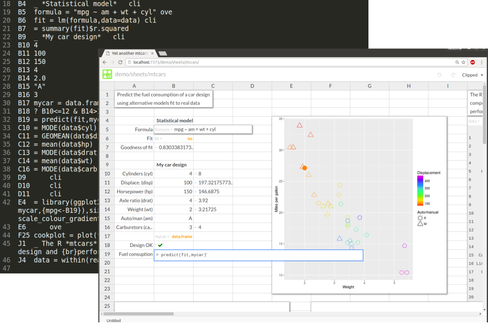
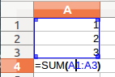

A spreadsheet file format for humans
Why?
A spreadsheet’s primary user interface is the familiar two dimensional grid of cells. By entering formulas into those cells, humans get to tell the computer what calculations to do on what data. The spreadsheet’s grid is it’s programming interface. It’s a particular kind of programming interface - a live, reactive one - but it’s still a programming interface.
Spreadsheets have another interface - the spreadsheet file - but it’s been mostly designed for computers, not humans. In contrast, Stencila Sheets use a file format that is intended to be human friendly. In a previous post I outlined some of the advantages of a plain text format for spreadsheets. These include making spreadsheets more transparent (you can see all of it’s source code in one file) and diff-able (you can use them with a version control system like git).

But maybe the biggest advantage of having a plain-text, designed-for-humans format is “social” - it allows different types of users to collaborate on the same spreadsheet using the interface they are most accustomed to. “Coders”, people who are used to writing code in an editor like vim and using version control tools like git, can edit spreadsheets used by “clickers”, people who would prefer to stay in the grid-based spreadsheet interface. Providing multiple programming interfaces to the same underlying execution engine enhances transparency and reproducibility through accessibility.
Defining a file format is not a trivial task - decisions made early on can, if the file format is used a lot, have big consequences later on. So, in the hope that lots of people will find them useful :), this post proposes a file format for Stencila Sheets with the aim of getting comments and suggestions. Because a file format is a specification, this is going to get a little technical later on - but hang in there, it’s not too dense - after all it’s meant to be a file format that is human-friendly!
Other formats
Before diving into a new spreadsheet file format it’s worth considering the alternatives already out there. Microsoft Excel’s format, the “Office Open XML Spreadsheet” or XLSX, is the dominant spreadsheet file format today. Let’s look at that format for a very simple spreadsheet with three numbers and a formula that adds them all up:

When you save that spreadsheet as an .xlsx file what you get is actually a zip archive containing seven XML files:
.
├── [Content_Types].xml
├── docProps
│ ├── app.xml
│ └── core.xml
├── _rels
└── xl
├── _rels
│ └── workbook.xml.rels
├── styles.xml
├── workbook.xml
└── worksheets
└── sheet1.xml
After (1) unzipping that archive, (2) digging down to the file xl/worksheets/sheet1.xml and (3) pretty printing it, we can (if we want to go to all that effort) see the contents of our spreadsheet’s cells:
...
<sheetData>
...
<row r="3" customFormat="false" ht="12.8" hidden="false" customHeight="false" outlineLevel="0" collapsed="false">
<c r="A3" s="0" t="n">
<v>3</v>
</c>
</row>
<row r="4" customFormat="false" ht="12.8" hidden="false" customHeight="false" outlineLevel="0" collapsed="false">
<c r="A4" s="0" t="n">
<f aca="false">SUM(A1:A3)</f>
<v>6</v>
</c>
</row>
</sheetData>
...
So clearly, when people were designing the XSLX format, human readability was not a focus - they were presumably were more interested in machine readability and interoperability. The OpenOffice spreadsheet format, ODS, is similar to XLSX. But as far as human readability is concerned, ODS is no better, and arguably worse, than XLSX:
...
<table:table table:name="Sheet1" table:style-name="ta1">
...
<table:table-row table:style-name="ro1">
<table:table-cell office:value-type="float" office:value="3" calcext:value-type="float">
<text:p>3</text:p>
</table:table-cell>
</table:table-row>
<table:table-row table:style-name="ro1">
<table:table-cell table:formula="of:=SUM([.A1:.A3])" office:value-type="float" office:value="6" calcext:value-type="float">
<text:p>6</text:p>
</table:table-cell>
</table:table-row>
</table:table>
...
There is another, little known, Microsoft format for spreadsheets called
SYmbolic LinK (SYLK)
, which is a lot easier on human eyes. That same 4,268 byte .xlsx or 11,710 byte .ods spreadsheet can also be saved as a 72 byte plain text .slk file:
ID;PCALCOOO32
C;X1;Y1;K1
C;X1;Y2;K2
C;X1;Y3;K3
C;X1;Y4;K6;ESUM(A1:A3)
E
You can open a SYLK file in a text editor and easily edit the cell values (K is a cell value) and formulas (E indicates an expression). But, while it’s a big improvement, it’s still not a very human readable format compared to modern high level programming languages like Python and Julia - it’s more like a low level assembly language.
Pyspread is Python-backed spreadsheet which is similar to Stencila sheets in that the cell expressions get evaluated within a Python context. It uses it’s own style for cell references (e.g. SUM(A1:A3) becomes sum(S[:3,0,0]) where S[:3,0,0] refers to the first three rows of the first column of the first sheet) and has a custom file format (bzip2-ed text) which is readable, but like SYLK, is still quite “low level”:
[Pyspread save file version]
0.1
[shape]
10 10 1
[grid]
1 0 0 2
3 0 0 sum(S[:3,0,0])
0 0 0 1
2 0 0 3
[attributes]
[row_heights]
2 0 25.0
[col_widths]
0 0 80.0
[macros]
In contrast to these other formats, the current Stencila Sheet file format is closer to a mix of spreasheet syntax and programming source code:
#eviron r
A1 1
A2 2
A3 3
A4 = SUM(A1:A3)
The rest of this post looks at ways to improve and extend this file format to include things like meta-data, styling and “extra source”.
Directory structure
Currently, a sheet resides not in a single file, but in a directory. Here’s the directory structure for the sheet at https://stenci.la/nokome/examples/simple-sheet :
.
├── out
│ ├── context.RData
│ ├── E2-b17f7870032ed5cb94110116293c95cb.png
│ └── out.tsv
└── sheet.tsv
The sheet’s source file is sheet.tsv and all the outputs are in the out sub-directory: out.tsv stores the type and value of each cell, context.RData is the R object file that saves all the sheet’s calculated values and E2-b17f7870032ed5cb94110116293c95cb.png is the PNG file that is generated by cell E2. Everything in the out directory is an artifact of the sheet’s source in sheet.tsv. This is different to XLSX and other format which combined source and calculated values in the same file.
Source file format
Currently, sheet.tsv is a tab delimited file with rows for each cell, a column for the cell’s source code, and optionally a column for it’s display mode. I’m proposing to instead use a sheet.txt file with a different, but similar, syntax outlined below. Before going in to details of that format it’s worth getting an overview of what the sheet.txt would look like. So, here a simple example which illustrates the various sections of that file.
#title An example sheet for syntax
#summary Demonstrates the use of alternative syntax elements
#environ r
#requires ggplot2
A1 6
A2 7
A3 = A1*A2
A4 ? A3==42
B1 _ A normal distribution |N ~(42,5)|
B2 data = simulate(1000)
B3 ggplot(data) +
geom_bar(aes(x=answer))
C1 = A1*2
C2:C3 == C1
`sim <- function(x) data.frame(answer=rnorm(1000,6,2) * 7)
&A1 color:"grey"
%A 10cm
*B1 ove
*C10:D13 cli
The file is made up of lines which specify certain aspects of the sheet and which are broken into sections. These sections are reflected in the following subsections of this document. A human author of this file would not have to put in these blank lines, nor organise lines by their sections. But the file would get generated by the software in this way and with this order. Lines that are indented represent a continuation of content from the previous line.
Some of the syntax definition below refer to cell identifiers, cell ranges, column ranges and row ranges. For reference, here’s a set of regex definitions for them:
{col-id} : [A-Z]+ egs. A, ABE
{row-id} : [1-9]+[0-9]* egs. 1, 123
{cell-id} : {col-id}{row-id} egs. A1, ABE123
{cell-range} : {cell-id}(:{cell-id}) egs. A1, A1:D10
{col-range} : {col-id}(:{col-id})? egs. A, A:Z
{row-range} : {row-id}(:{row-id})? egs. 1, 1:30
{range} : {cell-range}|{col-range}|{row-range}
Meta attributes
Lines starting with a hash (#) indicate meta-attributes of the sheet and which you usually don’t want to be visible in the sheet’s cells. The syntax is:
#{name} {content}
Examples include:
#title {title-text} : the title for the sheet; goes into <title> element and displayed in the browser window title bar
#summary {summary-text} : a brief summary of the sheet
#keywords {keywords-list} : a comma separated list of keywords; goes into <meta name="keywords"> element
#authors {authors-list} : a comma separated list of authors; goes into the <address id="authors"> element
#environ {execution-environment} : the execution environment e.g. #environ r
#requires {package-list} : a comma separated list of packages required in the sheet; these packages will be imported into the sheet’s context before any cells are executed e.g. #requires numpy, matplotlib
Note that meta-attributes can be defined in cells by used a named cell instead of a # line e.g. A1 requires = ggplot2.
Cell source
Lines starting with a cell range (e.g. A1 or A1:D20) define the source code for a cell. The syntax is:
{cell-range} {cell-source}
where {cell-source} has different syntax depending upon the type of cell (some of these are described below but see
https://github.com/stencila/stencila/issues/136
for more details). When the software generates the sheet.txt file it should output cell sources in the topological sort order defined by the dependency graph to avoid spaghetti-ness.
Examples:
42, 3.14 or "a string" : literal (or “constant”) cells which define data
= A1*A2 : formula cells which define an expression to be evaluated
== C1 : clone cells which translate a formula cell to a different row or column (see
https://github.com/stencila/stencila/issues/170
)
? A3==42 : test cells which define a test assertion
Extra source
You can write a function in a cell (e.g. A1 = function(x,y) x*y*y). But sometimes you might want to write a function and not have it appear in a cell. In those instances you can use the extra source section. Extra source lins are indicated by a backtick (```) and will usually be multiline and thus indented (but don’t have to be).
Cell styling
It is proposed to have dynamic cell styling in sheets. This would be similar to Excel’s “conditional formatting” but would be based on CSS properties whose value can be either fixed or the string result of evaluating an expression in the execution environment. See https://github.com/stencila/stencila/issues/97 for some more discussion on this. The syntax of a cell styling line is an ampersand followed by a cell range, a space and then one or more semicolon separated CSS properties whose values are expressions in the environment’s language:
&{range} ({css-property}:{expression};)+
Examples:
&A1 color:"grey" : set the text color of cell A1 to grey
&A2 color:if (value<0) "red" else "black" : set the text color to red if the cell’s value id less than 0, black otherwise
&A:Z font-size: 20px; background: hsv(h=A1, s=saturation, v=1, alpha=value) : for columns A to Z set the font-size to 20 pixels and the background color according to the cell’s own value and the values of cell A1 and the named cell saturation
Cell height and width
Row heights and column widths can be specified using a CSS length value e.g 14px, 10cm. The syntax is a percent sign (%), a column or row range, a space and a
CSS length value
:
%{col-range}|{row-range} {css-length}
Examples:
%A 10cm : set column A width to 10cm
%2:10 20px : set the height of rows 2 to 10 at 20 pixels
Cell display
In sheets, cells can have one of three display modes:
- clipped (
cli): cell content does not extend beyond the width of the column or the height of the row - expanded (
exp): the height of the cell’s row is expanded to fit the cell’s content - overlay (
ove): the cell’s content is displayed above the content of adjacent cells
There are different default display modes for different types of content. Most cell types have a default display mode of clipped but, for example, a cell that produces a plot (has a image_file type) is displayed as overlay by default.
Cell display lines have an asterisk (*), a range, a space and one of the display mode codes:
{range} cli|exp|ove
Examples:
*A1 ove : display cell A1 as overlaid
*7 cli : display all cells in row 7 clipped
*A:C exp : display columns A,B,C as expanded
Output file format
Currently out/out.tsv is a tab delimited file with a row for each cell and columns for cell id, cell type (the type of the native object) and cell value (the string representation of the native object) e.g.
A1 string Height (cm)
A2 real 1.2
A3 real 1.6
A4 real 1.9
A6 real 1.56666666666667
A7 boolean true
...
E2 image_file out/E2-386cb1960d9e10e545bf74f6772f9f35.png
I’m not proposing to change this format. It is easily read by humans and machines. Although it could probably do with a header. However, I am interested in people’s thoughts as to whether its best to leave this content in a separate file, or to combine it with the source file (perhaps along the lines of what SYLK does with a cell’s value on the same row as it’s formula)
Interoperability
This proposal is for an internal, more human friendly, file format and we expect people would still want to be able to export and import from .csv, .xlsx and other formats to inter-operate with different software. We’ve started working on that e.g.
https://github.com/stencila/stencila/issues/168
Comments and suggestions
The purpose of this blog post is to get some feedback on the proposed file format for Stencila sheets. We’d really appreciate any comments or suggestions. Feel free to add a comment at
https://github.com/stencila/stencila/issues/175,
join the chat at
https://gitter.im/stencila/stencila
or email me
nokome@stenci.la
. This post is likely to get updated as any suggestions come in (git clone https://stenci.la/stencila/blog/humane-sheets.git to get a commit history).
Acknowledgements
Joel Dueck previously suggested some changes to the file format: https://thoughtstreams.io/joeld/problems-with-excel/ . I haven’t fully followed his suggestions here but I was influenced by them and really appreciate him taking the time to think about it and put those thoughts down. If anyone thinks I should take more notice of his suggestions, please let me know!
Thanks to Ernő Zalka for the suggestion of “clone” cells https://github.com/stencila/stencila/issues/170 and to Roland Kaufmann for pointing out the SYLK format.